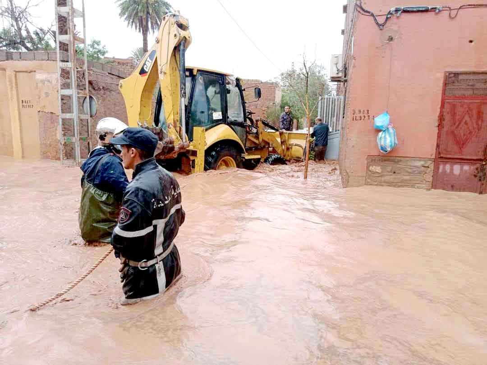

الجمهورية الجزائرية الديمقراطية الشعبية
⚠ نداء عاجل — URGENT APPEALمدينة عين الصفراء بين الفيضانات والتغير المناخي
عامان على فيضانات 8 سبتمبر 2024، والآثار لا تزال قائمة. نطالب بالتكفل الجاد والعاجل، وبإجراءات عملية ومستدامة للوقاية من المخاطر المناخية والتكيف معها.
عامان دون تكفل كامل بالمتضررين
مطالب واضحة وقابلة للتنفيذ
توقيعًا إلى حد الآن
يوم الخميس 27 أوت 2026 — ولاية النعامة
شهدت عين الصفراء، يوم 8 سبتمبر 2024، فيضانات عنيفة خلّفت أضرارًا واسعة بالمساكن والمحلات التجارية والطرُقات وشبكات البنية التحتية، خاصة في حي وسط المدينة وحي مولاي الهاشمي (عين الرشاق) ومنطقة سيدي بوجمعة، كما أودت سيول الوادي بحياة أحد المواطنين، رحمه الله.
ورغم معاينة الأضرار والوعود بالتكفل بجميع المتضررين آنذاك، فإن مرور ما يقارب عامين دون تعويض ما تبقى من المتضررين أو توفير حلول دائمة، أبقى آثار الكارثة قائمة، وزاد من معاناة المواطنين.
كما شهدت المنطقة خلال شهر جانفي 2026 تساقطات ثلجية كثيفة وغير معتادة، فضلًا عن هبوب رياح قوية من حين إلى آخر، وهو ما يؤكد الحاجة إلى تعزيز الاستعداد لمختلف الظواهر المناخية المتطرفة، ووضع خطط فعالة للوقاية والتكيف معها.

يطالب سكان حي وسط مدينة عين الصفراء، ولاية النعامة، بالتكفل الجاد والعاجل بآثار فيضانات 8 سبتمبر 2024، التي لا يزالون يعيشون تداعياتها إلى يومنا هذا، واتخاذ إجراءات عملية ومستدامة للوقاية من المخاطر المناخية والتكيف معها، وذلك من خلال المطالب التالية:
إن سكان حي وسط مدينة عين الصفراء لا يطلبون امتيازًا ولا صدقة، بل يطالبون بحقوق مشروعة، وبالإنصاف والتعويض والحماية، وبمدينة نظيفة وآمنة وقادرة على مواجهة المخاطر المناخية.
فالوقاية اليوم أقل كلفة من معالجة آثار الكوارث غدًا، وحماية السكان والممتلكات مسؤولية عمومية تستوجب التخطيط والتمويل والمتابعة الجادة والمستمرة.
لا حاجة إلى إنشاء حساب ولا إلى بريد إلكتروني. اكتب اسمك، فيُضاف مباشرة إلى قائمة الموقّعين المرفقة بالوثيقة الموجهة إلى السلطات.